2020
Plasmonic Multilayers based on DNA-coated gold nanoparticles
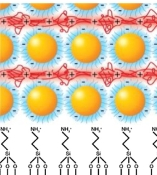
Gold nanoparticles coated with single-stranded DNA ligands have a
powerful dual functionality: The DNA ligands can be engineered with
highly specific end groups that selectively attach to DNA strands on
the surfaces of viruses and bacteria, or to detect microRNAs in the
bloodstream that are early cancer indicators. The gold core serves as a
light amplifier via the surface plasmon resonance for detection of
agents using for instance surface-enhanced Raman spectroscopy.
2019
Bioinspired membranes: Teaching an old dog new tricks

Living cells control input and output from the cell to the surrounding
medium with highly specific channels formed by membrane proteins. In
order to make this specificity available to membranes...
We've got the beets: Food consumers may see red, naturally
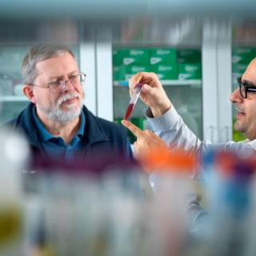
Cornell food scientists hunting for a stable, natural red food coloring
to replace artificial dyes have unlocked a secret ...
2018
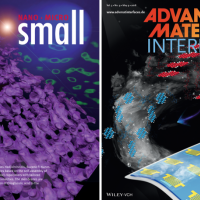 During just the final half year of D-line operation in 2018, D-line users have published 19 articles in renowned journals on ex-situ and in-situ studies of soft materials...
Congratulations, Luisa Whittaker-Brooks, University of Utah and CHESS User, who has been named one of the
2018 Talented 12 by Chemical & Engineering News.
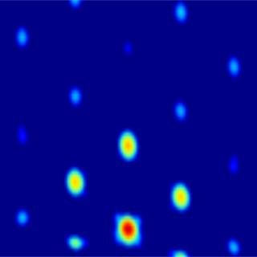 Nano-structure of thin polymer films is precisely controlled by new type of annealing
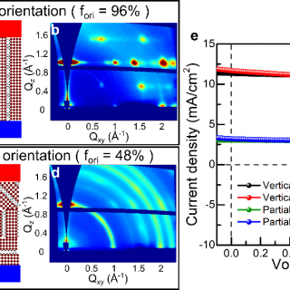 Metal Halide Perovskites (MHPs) are poised to revolutionize
the field of optoelectronic materials with their phenomenal performance
in solar cells, light emitting diodes (LEDs), photodetectors and lasers.
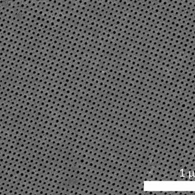 TeraPore Technologies,
the developer of advanced nanofiltration membrane systems for
bioprocess and other applications, announced that it has completed a $6M Series A financing round.
2017
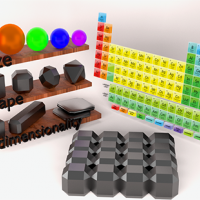 The assembly of colloidal nanocrystal building blocks
into ordered superlattices presents many scientifically interesting and
technologically important research challenges to create programmable
matter from “crystals-of-crystals”...
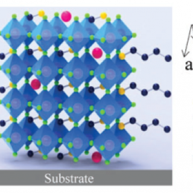
Organic-inorganic lead iodide perovskites are a much studied materials
class that have reached solar cell efficiencies above 22% – on
par with amorphous silicon – in only a few years after
discovery...
Combinatorial thin film research can comprise hundreds of samples grown
with slightly different compositions or processing conditions ...
The MaMaSELF program, short for Masters in Material Science Exploring
Large-scale Facilities, is a two-year European Masters program in
materials science ...
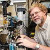 Scientists and engineers are constantly working to improve the performance or solar cells ...
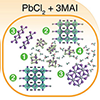
Mixed organic-inorganic halide perovskite materials have been in the
spotlight in the photovoltaics research community ...
2016
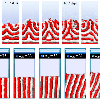
Based on research spanning more than 15 years at CHESS and at HASYLAB,
Christine M. Papadakis at the Technical University of Munich (TUM),
Germany, Dorthe Posselt at Roskilde University, Denmark, and CHESS staff
scientist Detlef Smilgies published a comprehensive review on in-situ
solvent vapor annealing processes ...
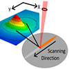 Thermal annealing is a standard method for bringing block copolymer
films into their thermal equilibrium morphology. However, typical
thermal annealing is slow ...
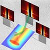 The ability to precisely control every aspect of a material, even at the
nanoscale, is of critical importance in a host of applications ...
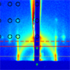
The SNIPS process (Self-assembly plus Non-solvent-Induced Phase
Separation) is a newly developed method to create asymmetric membranes
with well-defined pore sizes in the top separation layer, for instance
for ultrafiltration of proteins or viruses...
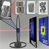 This
workshop sought to bring together scientists seeking to build and
understand new materials achieving exceptional properties through
assemblies of either organic or inorganic building blocks..
.
Knife-coated organic semiconductor blends with mobilities on par with single crystals
The paramount goal of organic electronics is to achieve high mobility in
organic transistors within solution-based coating methods ...
Transient phases during coating of an organic semiconductor film
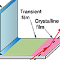
A key element for bringing organic electronics to the market place is
the understanding of the microstructure formation during coating and
printing. The deposit microstructure limits the device performance...
Former CHESS user Shawn Tan wins Innovators award in new field of nanoplasmonics
This past November ten young innovators made it to EmTech Singapore's
Innovators Under 35 list, selected from over 100 applicants from Asia
and Australasia...
2015
NASA Early Career Faculty Award for CHESS user Joshua Choi
CHESS user Joshua Choi, an assistant professor at the University of
Virginia, won a prestigious NASA Early Career Faculty Award ...
Impact of solvent and polymer additives on heterojunction solar cells
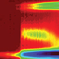 When building solar cells based on organic bulk heterojunctions
(BHJ), donor and acceptor semiconducting materials are deposited from
solution ...
Key to cooperative
Oswald ripening unraveled
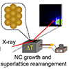 Through
diligent chemistry work on purifying small gold nanoparticles and then
reintroducing a variety of additives ...
CHESS
Student Paper Prize to Gaurav "Gino" Giri
CHESS Director Joel Brock was pleased to announce this year’s
winner of the CHESS Student Paper Prize as Gaurav “Gino”
Giri ...
Poster Prize winners honored at CHESS Users'
Meeting
An
important part of the annual CHESS Users’ Meeting is the display
and discussion surrounding users who present their work via posters ...
Switchable
Nanorods
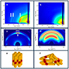
Nanorods are elongated nanoparticles with aspect ratios of typically
3:1 to 10:1 and thus have interesting structural and optical
anisotropies ...
D1 user Lina Botero of Cornell Fiber Science & Apparel Design in
the news: Lighted clothing that flashes to beat of music will hit
runway ...
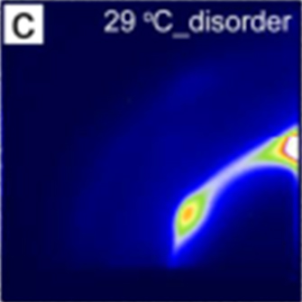 When we
heat up something, we usually expect it to come out less ordered, e.g.
ice turns to water ...
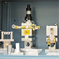 With
the availability of the
Sample
Environment Lab, CHESS staff scientist Detlef Smilgies, also an
adjunct
associate professor at the Cornell School of Chemical and
Biomolecular Engineering, took three aspiring chemical engineers under
his wings...
 Bulk hetero junctions (BHJ) constitute a promising route for low-cost
solar cell...
Bulk hetero junctions (BHJ) constitute a promising route for low-cost
solar cell...